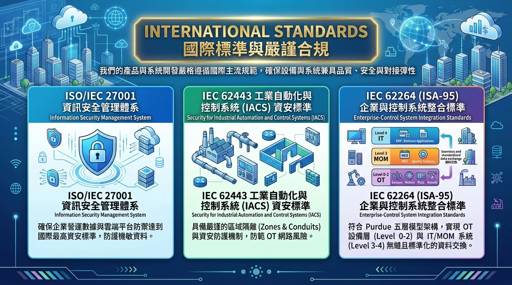
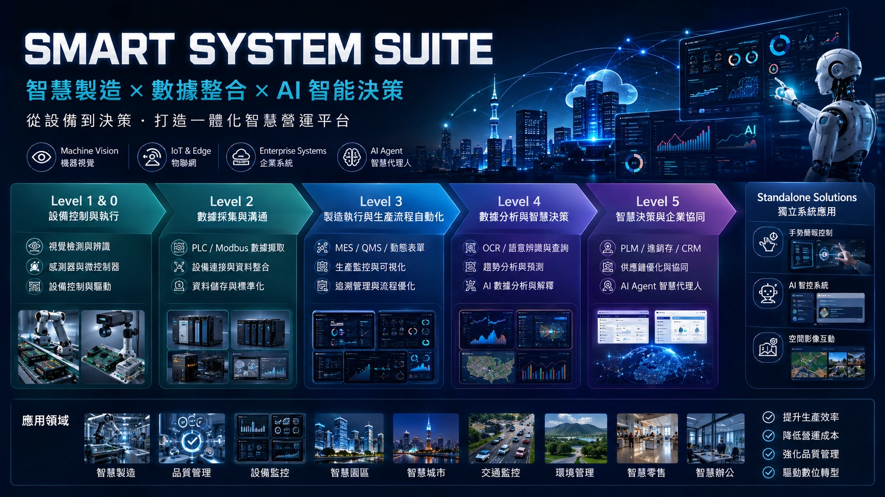
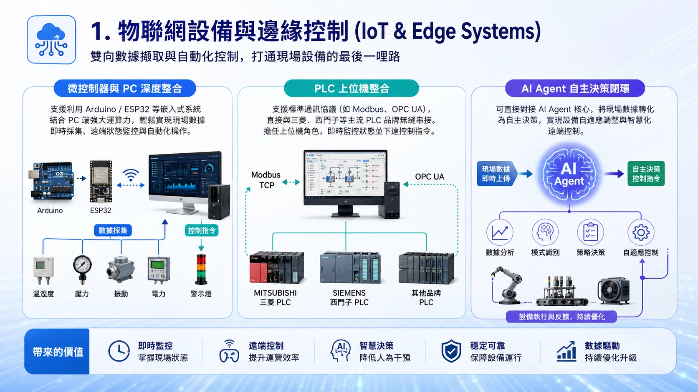
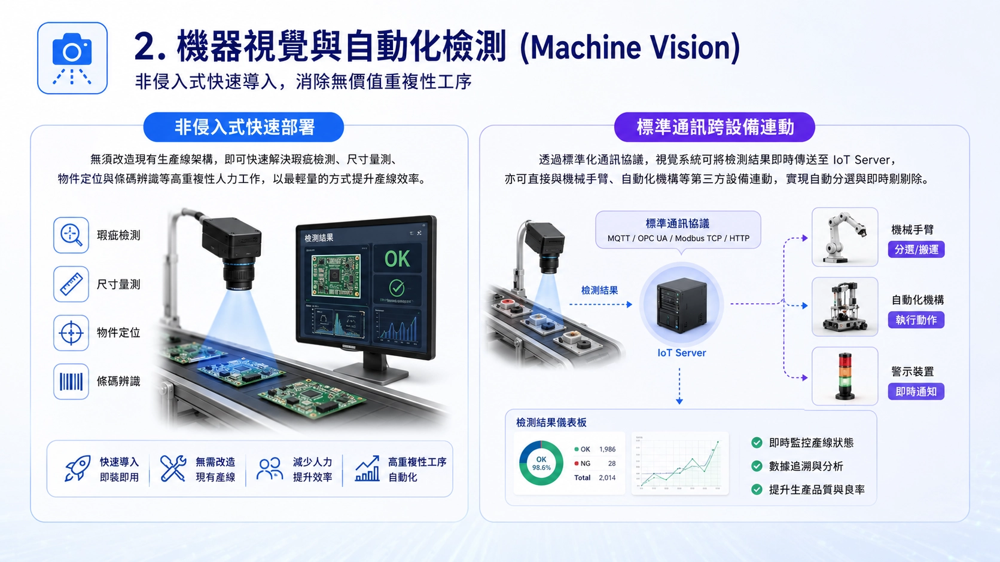
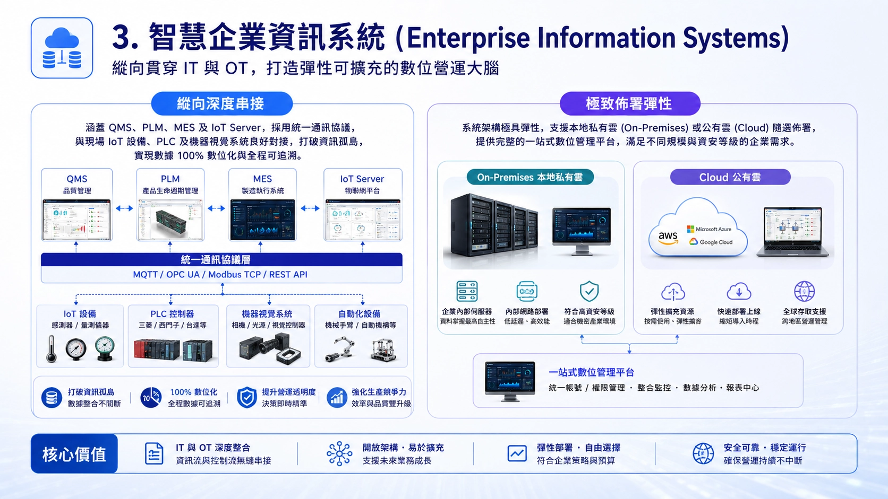
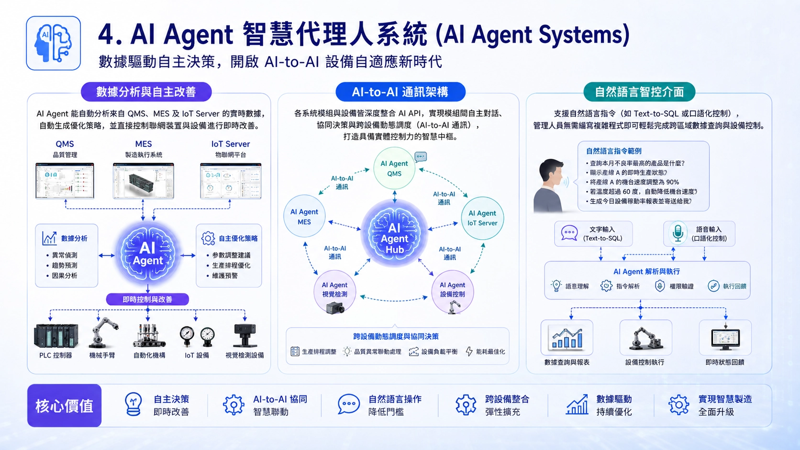
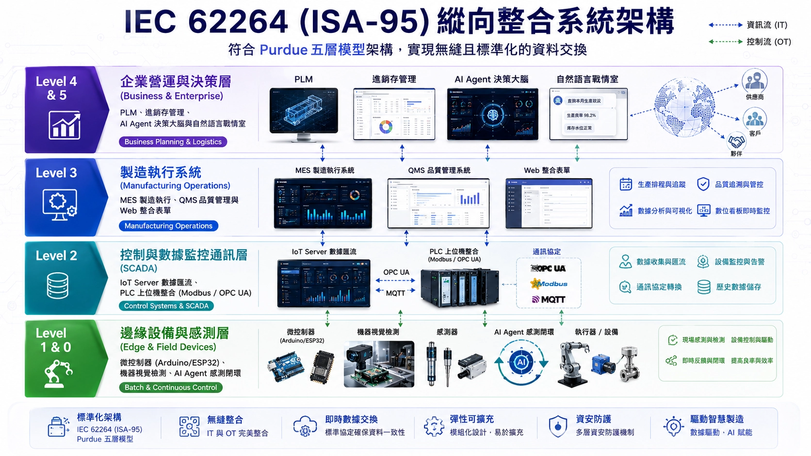

四大核心解決方案
打通 OT 設備層至 IT 決策層的完整數位化架構
IEC 62264 (ISA-95) 工業標準架構導入
嚴格遵循國際主流規範，實現 OT 設備層（Level 0-2）與 IT/MOM 系統（Level 3-4）無縫且標準化的資料交換。
ABOUT QIZTEK
深耕軟硬體整合 ‧ 陪伴製造業智慧轉型
祁知科技成立於 2015 年 6 月，核心團隊來自工研院、資策會及研華科技等頂尖機構與企業。我們定位為專業的自動化系統開發團隊，致力於消除日常工作與營運中無價值的重複性作業，為企業提供高效益的自動化與數位化轉型方案。
我們專注於為廣大中小企業提供高度整合的軟硬體解決方案，核心技術涵蓋：機器視覺系統、物聯網設備 (IoT/IIoT)、企業資訊系統以及 AI Agent 整合。
我們深知中小企業在數位轉型上的痛點。導入祁知科技的方案，您無需負擔高昂的建置預算，也無需具備深厚的 IT 數位化背景。無論您是面對「少量多樣」的生產挑戰，或是希望導入創新技術提升效率，我們都能為您量身打造最適合的解決方案，成為您數位轉型路上最值得信賴的長期夥伴！

INTERNATIONAL STANDARDS 國際標準與嚴謹合規
我們的產品與系統開發嚴格遵循國際主流規範，確保設備與系統兼具品質、安全與對接彈性：
ISO/IEC 27001
資訊安全管理體系，確保企業營運數據與雲端平台防禦達到國際最高資安標準，防護機敏資料。
IEC 62443
工業自動化與控制系統（IACS）資安標準，具備嚴謹的區域隔離（Zones & Conduits）與資安防護機制，防範 OT 網路風險。
IEC 62264 (ISA-95)
企業與控制系統整合標準，符合 Purdue 五層模型架構，實現 OT 設備層（Level 0-2）與 IT/MOM 系統（Level 3-4）無縫且標準化的資料交換。
PRODUCTS & SOLUTIONS
核心產品與解決方案
祁知科技打造貫穿 OT 設備層至 IT 決策層的全方位智慧製造與自動化生態系，為企業實現高彈性、高效益的數位轉型。

ISA-95 全方位技術與系統架構矩陣
完整涵蓋 Level 0 至 Level 5 的工業自動化與企業管理系統
數據分析與智慧決策 (Level 4 & 5)
| No. | 對應層級 | 技術類別 / 名稱 | 應用說明 |
|---|---|---|---|
| 1 | Level 5 | AI 數據分析 | 用各種模型(方法)進行數據統計分析，並由 AI 進行說明與解釋。 |
| 2 | Level 5 | 趨勢預測系統 | 用於優化需求預測、自動化採購決策，以降低庫存成本並提升供應鏈效率。 |
| 3 | Level 5 | 進銷存系統 | 整合採購、銷售與庫存管理，即時掌控物料流向與數量的數位化系統。 |
| 4 | Level 5 | PLM 產品生命週期管理系統 | 管理產品從概念、設計、開發、變更到退役的全生命週期資料與流程，促進跨部門協同與創新。 |
| 5 | Level 5 | CRM 客戶關係管理系統 | 整合客戶資料、互動記錄與銷售流程，提升客戶滿意度並驅動業務成長與精準行銷。 |
| 6 | Level 4 | 語意辨識及查詢 | 用來快速理解非結構化文件內容、優化搜尋效率，並自動分類和路由電子郵件或報告。 |
| 7 | Level 4 | OCR 辨識系統 | 用於自動擷取紙本文件（如發票、合約）上的文字資訊，實現資料自動輸入與處理。 |
製造執行與生產流程自動化 (Level 3)
| No. | 對應層級 | 技術類別 / 名稱 | 應用說明 |
|---|---|---|---|
| 1 | Level 3 | 動態 Web 表單系統 | 用於建立生產戰情室與數位介面，以可視化方式監控設備效率、品質及製程狀態。 |
| 2 | Level 3 | QMS 品質管理系統 | 透過標準化流程與數據追溯，全面監控並提升產品品質的系統。 |
| 3 | Level 3 | 資料庫系統 | 用於集中儲存與管理 Level 1/2 採集的所有生產、品質、設備數據，以實現數據追溯和分析。 |
| 4 | Level 3 | MES 製造執行系統 | 透過數位化派工與現場看板，即時掌控生產進度與設備狀態，以優化製造流程並縮短交期的系統。 |
數據採集與溝通 (Level 2)
| No. | 對應層級 | 技術類別 / 名稱 | 應用說明 |
|---|---|---|---|
| 1 | Level 2 | 動態 Web 表單系統 | 用於建立並共享數位資料查詢介面，提供快速檢索及區域共享功能。 |
| 2 | Level 2 | PLC 資料擷取系統 (Modbus) | 用於標準化、即時地讀取 PLC 內的設備狀態、感測器數據和生產計數，為上層系統提供原始數據流。 |
| 3 | Level 2 | Modbus 訊息整合系統 | 用於標準化不同設備（如 PLC、感測器）間的訊號傳輸與整合。 |
| 4 | Level 2 | 資料庫系統 | 用於標準化、結構化地儲存設備或儀器傳來的數據，並進行儲存及彙整。 |
| 5 | Level 2 | EAP 控制及資料擷取系統 | 半導體業常用於收集設備狀態、能源消耗和維護數據，並將這些資訊數據標準化。 |
| 6 | Level 2 | Arduino 遠端監控與數據擷取系統 | 透過 PC_A 擷取現場數據並轉發至遠端 PC_B，實現跨區域的狀態監控與視覺化遠端操作。 |
設備控制與執行 (Level 1 & 0)
| No. | 對應層級 | 名稱 / 類別 | 核心技術 | 應用說明 |
|---|---|---|---|---|
| 1 | Level 1/0 | 缺陷檢測系統 (視覺) | 機器視覺辨識 | 自動化檢查產品表面瑕疵、異物或組裝錯誤，確保產品品質一致性。 |
| 2 | Level 1/0 | Barcode 辨識系統 (視覺) | 機器視覺辨識 | 讀取產品、容器或工單上的條碼/二維碼，實現生產追溯、物料管理與即時在製品定位。 |
| 3 | Level 1/0 | 尺寸量測系統 (視覺) | 機器視覺量測 | 非接觸式即時量測產品關鍵尺寸與公差，確保製造精度，並對不合格品進行自動分選。 |
| 4 | Level 1/0 | 數量盤點系統 (視覺) | 機器視覺計數 | 計算產線、棧板或倉庫中的產品數量，提升庫存盤點效率，並優化物料流動管理。 |
| 5 | Level 1/0 | 物件辨識系統 (視覺) | 機器視覺定位 | 識別並定位生產線上的不同類型零件或產品，協助機械手進行準確抓取、分類與組裝。 |
| 6 | Level 1/0 | Arduino 微控制器應用系統 | 嵌入式驅動 (PC Based) | 負責底層硬體的直接驅動（如 LED 開關、感測器讀取），是自動化設備的執行核心。 |
| 7 | Level 1/0 | 智慧停車監控系統 | 紅外線感測器 | 採用紅外線避障感測器作為核心偵測元件，利用紅外線在物體表面反射的物理特性來判斷車位是否被佔用。 |
| 8 | Level 1/0 | 智慧廢棄物管理系統 | 超音波感測器 | 透過整合超音波感測、紅外線人體偵測與伺服馬達控制，避免垃圾桶已滿溢出或清運空桶的無效作業。 |
| 9 | Level 1/0 | 環境適應型智慧晾曬系統 | 雨滴感測板、溫濕度感測器、光敏電阻 | 判斷降雨、光照與衣物乾濕狀態，並多變的氣候下保護衣物不受損害。 |
| 10 | Level 1/0 | 安全門禁與權限管理 | RFID、SQL、物聯網 | 透過 SQL 資料庫，定義不同的權限組（如：管理員、普通員工、訪客），並設定其可進入的時間段，系統會實時顯示刷卡成功或失敗的紀錄。 |
| 11 | Level 1/0 | 掃描式障礙物探測雷達 | 超音波感測器 | 模擬了軍用雷達的運作機制，透過旋轉式掃描提供周遭環境的 2D 空間映射。 |
獨立專用系統 (Standalone Systems)
| No. | 對應層級 | 名稱 | 核心技術 | 應用說明 |
|---|---|---|---|---|
| 1 | Level 1/0 | 遠端手勢簡報控制系統 |
1. 實現高精度 21 個手部關鍵點追蹤 2. 自定義動態手勢演算法，精準對應 PPT 翻頁與播放控制 3. 優化低延遲影像處理流，確保操作即時性 |
透過非接觸式手勢控制簡報，適用於智慧會議、展演、油污髒污或無塵室等場景。 |
| 2 | Level 1/0 | 跨平台 AI Agent 智控系統 |
1. 「技能 (Skills)」與「工具 (Tools)」分離 2. 透過 Python 驅動序列埠/網路協定控制 ESP32/PLC 硬體終端 3. 整合 LLM 進行自然語言資料庫查詢 (Text-to-SQL) 與邏輯編排 |
透過自然語言串接資料庫與 ESP32 / PLC，實現跨設備監控、控制與智慧資料查詢。 |
| 3 | Level 3 | 空間化即時影像互動系統 |
1. HTML / CSS / JavaScript Web 前端互動介面 2. 整合地圖 API 建立地理空間定位與視覺化 3. 串接 YouTube CCTV 即時影像，建立多點即時影像來源 4. 影像視窗、地圖標記與使用者操作的空間聯動 5. 結合遊戲化 (Gamification) 機制，建立具備空間感的即時影像互動體驗 |
整合地圖與 CCTV 即時影像，可應用於智慧城市、交通監控、觀光導覽及園區管理等場景。 |
1. 物聯網設備與邊緣控制 (IoT & Edge Systems)
雙向數據擷取與自動化控制，打通現場設備的最後一哩路

微控制器與 PC 深度整合
支援利用 Arduino / ESP32 等嵌入式系統結合 PC 端強大運算力，輕鬆實現現場數據即時採集、遠端狀態監控與自動化操作。
PLC 上位機整合
支援標準通訊協議（如 Modbus、OPC UA），直接與三菱、西門子等主流 PLC 品牌無縫串接。擔任上位機角色，即時監控狀態並下達控制指令。
AI Agent 自主決策閉環
可直接對接 AI Agent 核心，將現場數據轉化為自主決策，實現設備自適應調整與智慧化遠端控制。
2. 機器視覺與自動化檢測 (Machine Vision)
非侵入式快速導入，消除無價值重複性工序

非侵入式快速部署
無須改造現有生產線架構，即可快速解決瑕疵檢測、尺寸量測、物件定位與條碼辨識等高重複性人力工作，以最輕量的方式提升產線效率。
標準通訊跨設備連動
透過標準化通訊協議，視覺系統可將檢測結果即時傳送至 IoT Server，亦可直接與機械手臂、自動化機構等第三方設備連動，實現自動分選與即時剔除。
3. 智慧企業資訊系統 (Enterprise Information Systems)
縱向貫穿 IT 與 OT，打造彈性可擴充的數位營運大腦

縱向深度串接
涵蓋 QMS (品質管理)、PLM、MES 及 IoT Server，採用統一通訊協議，與現場 IoT 設備、PLC 及機器視覺系統良好對接，打破資訊孤島，實現數據 100% 數位化與全程可追溯。
極致佈署彈性
系統架構極具彈性，支援本地私有雲 (On-Premises) 或公有雲 (Cloud) 隨選佈署，提供完整的一站式數位管理平台，滿足不同規模與資安等級的企業需求。
4. AI Agent 智慧代理人系統 (AI Agent Systems)
數據驅動自主決策，開啟 AI-to-AI 設備自適應新時代

數據分析與自主改善
AI Agent 能自動分析來自 QMS、MES 及 IoT Server 的實時數據，自動生成優化策略，並直接控制聯網裝置與設備進行即時改善。
AI-to-AI 通訊架構
各系統模組與設備皆深度整合 AI API，實現模組間自主對話、協同決策與跨設備動態調度（AI-to-AI 通訊），打造具備實體控制力的智慧中樞。
自然語言智控介面
支援自然語言指令（如 Text-to-SQL 或口語化控制），管理人員無需編寫複雜程式即可輕鬆完成跨區域數據查詢與設備控制。
IEC 62264 (ISA-95) 縱向整合系統架構
符合 Purdue 五層模型架構，實現無縫且標準化的資料交換

縱向整合的核心概念
從現場設備到企業決策的數據鏈
本架構以 ISA-95 的企業與製造系統整合理念為基礎，將設備控制、數據採集、製造執行與企業營運串接成一條完整的數位鏈路。現場數據由下而上匯流，上層指令由上而下傳遞，形成「數據上收、決策下達、設備執行」的閉環。
架構說明：ISA-95 主要定義企業與製造控制領域之間的整合關係；本方案將 Level 5 作為企業 AI／智慧決策的延伸層，用於描述 AI Agent 與戰情室應用。
企業營運與決策層
Business PlanningPLM、進銷存管理、AI Agent 決策大腦與自然語言戰情室
製造執行系統
Operations ControlMES 製造執行、QMS 品質管理與 Web 整合表單
控制與數據監控通訊層
SCADA & PLCIoT Server 數據匯流、PLC 上位機整合 (Modbus / OPC UA)
邊緣設備與感測層
Field & Sensing微控制器 (Arduino/ESP32)、機器視覺檢測、AI Agent 感測閉環
RESOURCES & TECHNICAL MEDIA
技術分享與實作展示
歡迎觀看我們的系統操作展示影片與技術開發筆記
DefectEye - 缺陷檢測系統
自動化缺陷比對、異常即時警報傳送與 Modbus TCP 設備串接。
ImageCount Pro - AI 影像盤點
生產線光電觸發即時影像辨識、數量統計與 Modbus 串聯。
AI Agent 智慧代理人應用
基於大語言模型的 AI Agent 語音與智慧互動助理展示。
Data Acquisition 資料擷取系統
透由 Excel 設定快速連線 PLC，自動即時轉換數值與管理多機。
ImageCount Pro + AI API
結合自動攝像、物件偵測 API 與 AI 助理之閉環展示。
LiteRelay - Modbus 訊息中轉
設備互聯通訊橋樑，實現訊號轉換與跨設備交握。
BarScanner - 條碼辨識系統
自動化掃瞄與生產履歷紀錄，降低人工出錯率。
RFID 門禁系統 (WiFi 遠端控制)
整合 PC 與 WiFi 無線通訊之 RFID 遠端門禁與資料儲存。
Arduino 硬體控制 (PC Based)
PC-Based 與微控制器軟硬體整合控制實作。
AR 手勢控制與虛擬簡報互動
擴增實境 AR 手勢識別控制與虛擬畫面即時塗鴉書寫。
CONTACT US
聯絡與諮詢窗口
歡迎透過以下方式來信，我們的專業團隊將第一時間為您服務。